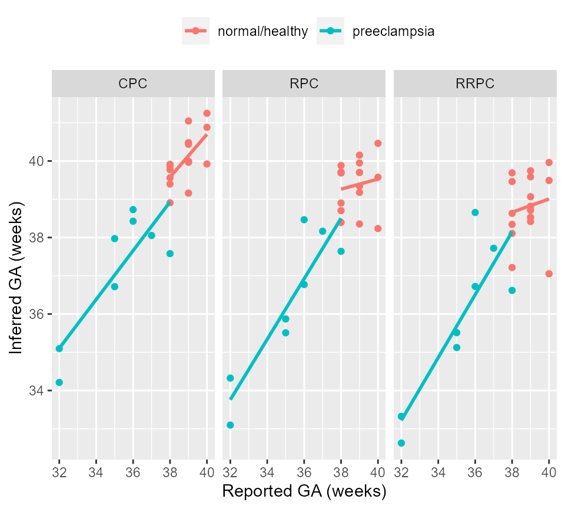

There are 3 gestational age clocks for placental DNA methylation data from Lee Y. et al. 2019:
To predict gestational, we load the example data:
pl_betas - DNAm data for 24 placental samplespl_pDat - Matching sample information
library(dplyr) # for data wrangling
library(ggplot2) # plotting
library(tidyr) # for pivot_longer
library(planet)
# load example data
data("pl_pDat")
data("pl_betas")To use each, we can specify the type argument in pl_infer_age.
We will apply all three clocks on this data, and add the predicted age to the sample information data.frame, pl_pDat.
pl_pDat <- pl_pDat %>%
mutate(ga_RPC = pl_infer_age(pl_betas, type = 'RPC'),
ga_CPC = pl_infer_age(pl_betas, type = 'CPC'),
ga_RRPC = pl_infer_age(pl_betas, type = 'RRPC')) ## [1] "558 of 558 predictors present."
## [1] "546 of 546 predictors present."
## [1] "395 of 395 predictors present."Note that the number of predictors (CpGs) that were used in our data are printed. It’s important to take note if a significant number of predictive CpGs are missing in your data, as this can affect the predicted gestational age accuracy.
Next, I plot the difference between predicted and reported gestational age, for each of the 3 gestational age predictors.
pl_pDat %>%
# reshape, to plot
pivot_longer(cols = contains('ga'),
names_to = 'clock_type',
names_prefix = 'ga_',
values_to = 'ga') %>%
ggplot(aes(x = gestation_wk, y = ga, col = disease)) +
geom_point() +
geom_smooth(method = 'lm', se = FALSE) +
facet_wrap(~clock_type) +
theme(legend.position = 'top') +
labs(x = 'Reported GA (weeks)', y = 'Inferred GA (weeks)', col = '')## `geom_smooth()` using formula 'y ~ x'
GA: gestational age